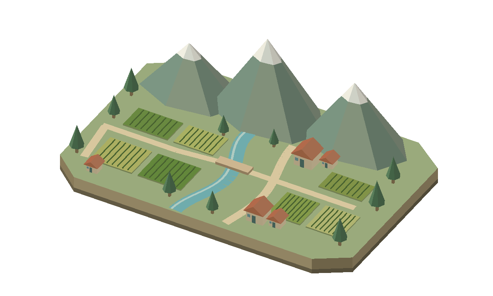

DEL CAMPO A UNA MEJOR DECISIÓN
Tu cosecha merece
una buena venta.
Conversemos sobre tu papa y comparemos cuánto te quedaría al venderla.
Una ruta para vender mejorRECORRIDO 3D

COTIZA · COMPARA · NEGOCIA · TODO ES SIMULADO1000 KG · PAPA BLANCA, PRIMERA · DATOS SIMULADOS
01 · Salimos del campo
Ver explicación de la cotización
El camioncito visitará tres compradores y negociará con la opción que deje más después de gastos. No se realiza una venta real.
01 Conversa02 Compara03 Decide
♧
BIENVENIDO AL CAMPO DIGITAL
Empecemos juntos
Una ayuda sencilla para comparar tus opciones de venta.
Prueba con agricultor / papa123
Acceso de ejemplo. No es una autenticación segura y no guardamos contraseñas.
⌂ Hecho para productores de Carhuaz, Áncash
DEL CAMPO A UNA MEJOR DECISIÓN
Conversemos sobre tu cosecha.
Resumen del lote y mejor oferta
♧
Tu ayudante de venta
Respuestas programadas · sin IA conectada
Listo para conversar
Puedes escribir o usar el micrófono.
La voz depende del navegador y puede requerir conexión. Revisa y confirma la transcripción con «Enviar». No guardamos audio.
EXPLORA TUS OPCIONES
Mapa ilustrativo del valle
Arrastra para moverte
Mayor monto Menor monto Sin datos / incompatible
La intensidad compara los montos actuales de las opciones mostradas. Disponibilidad y monto se muestran por separado.
DESPUÉS DE LOS GASTOS DE VENTA
¿Cuánto te quedaría?
Marca dos opciones en la lista para comparar.
Cómo se calcula el resultado
Los costes de producción todavía no están descontados. Estos montos no son la ganancia.
SOLO PARA EXPLORAR · DATOS SINTÉTICOS
¿Cómo cambian los precios?
Ejemplo inventado de papa blanca. No representa precios reales del mercado.
Menor precio / kg—
Precio medio / kg—
Mayor precio / kg—
Toca un punto o recórrelos con el teclado para ver el precio.
Ver valores por día
Serie de demostración con oscilaciones deterministas. No es un pronóstico.